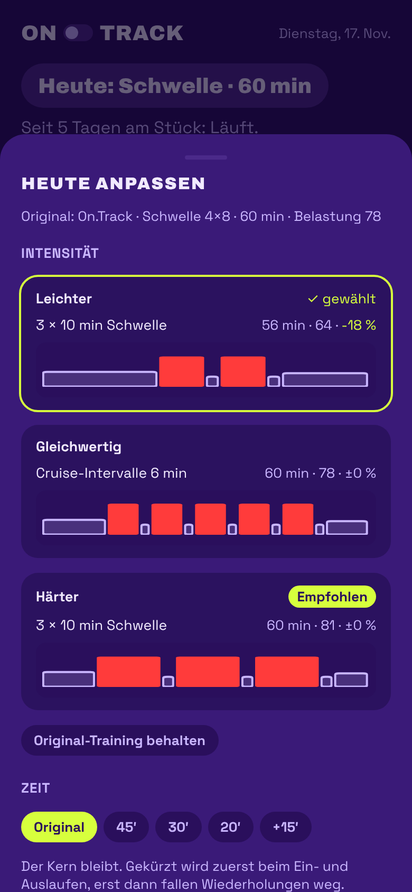
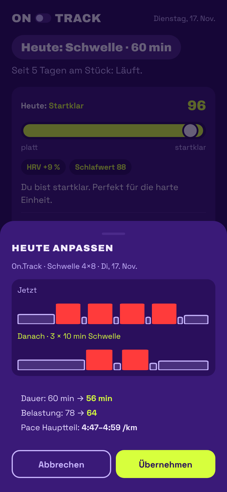
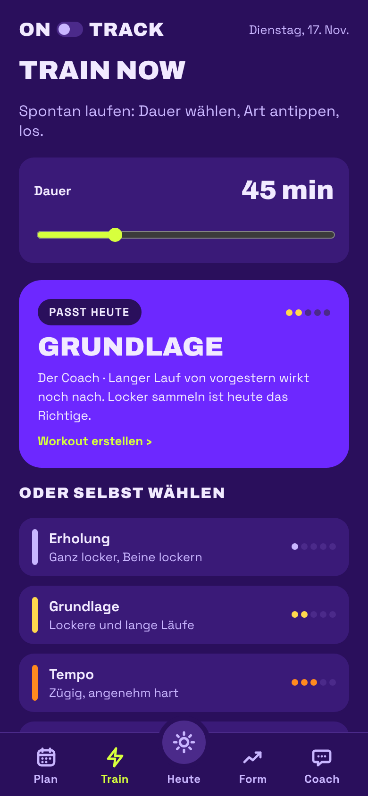
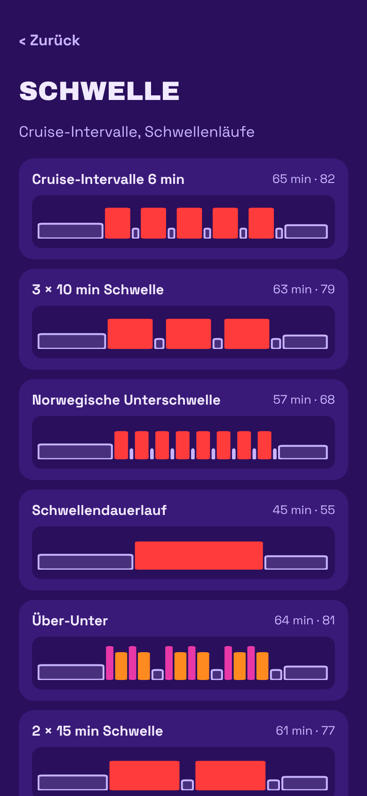
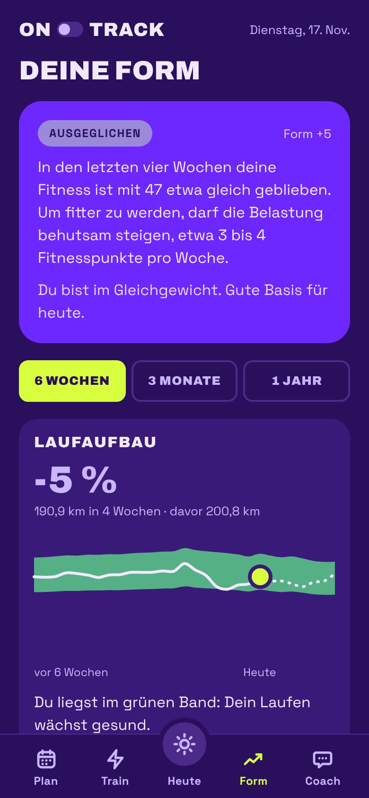
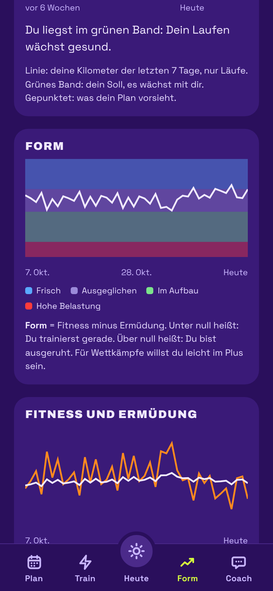
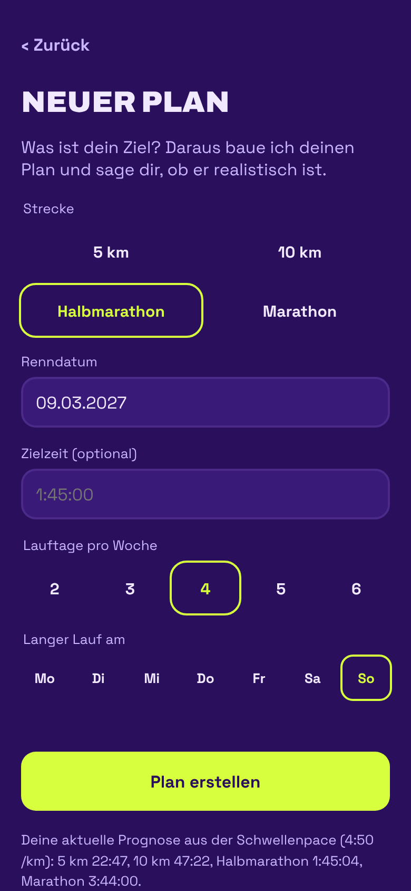
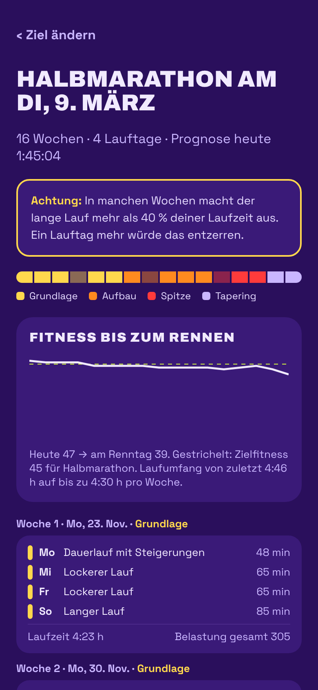
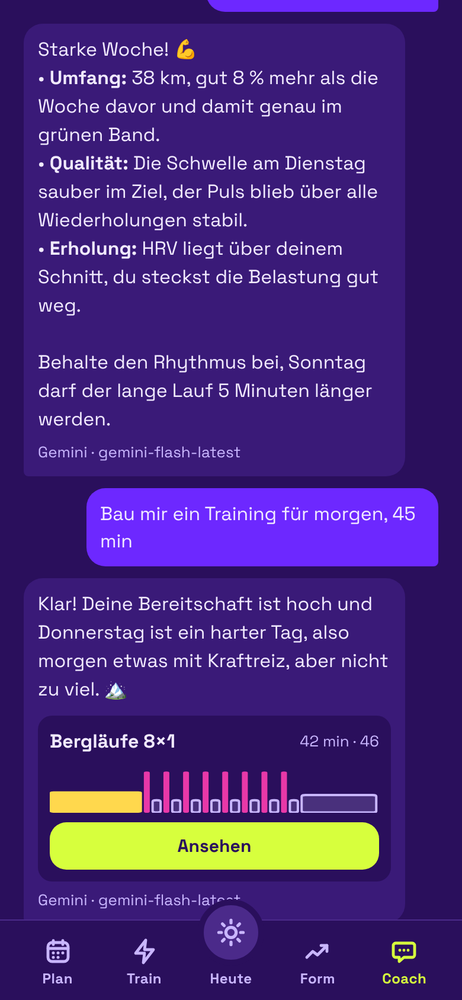

ONTRACKLäuft.
Dein Lauf-Coach, der mitdenkt. Trainingsplan, Tagesform, Anpassungen und ein KI-Coach in einer App. Alles synchron mit Intervals.icu und direkt auf deiner Uhr.
Gebaut für mich, offen für mehr. Alle Bilder zeigen Demo-Daten.
Bereitschaft statt Bauchgefühl.
Jeden Morgen ein Wert von 0 bis 100. Er setzt sich zusammen aus HRV, Ruhepuls und Schlaf im Vergleich zu deinem Normalwert, dazu kommt deine Trainingsform.
Für alles, was die Uhr nicht weiß, gibt es den Check-in mit einem Tipp: schlecht geschlafen, Alkohol, Stress, schwere Beine. Ist der Tag nichts für Vollgas, schlägt die App die leichtere Variante vor.
Echte Alternativen. Nicht nur langsamer.
Ein Tipp auf Anpassen, und du bekommst drei echte Workouts: leichter, gleichwertig, härter. Gleicher Trainingsreiz, andere Form. Die App markiert, was zu deiner Bereitschaft passt.
Wenig Zeit? Die Zeit-Chips kürzen zuerst Ein- und Auslaufen, der Kern bleibt. Jede Änderung zeigt erst eine Vorschau mit vorher und nachher, und ein Tipp holt das Original zurück.


Verschieben wie im Kalender.
Lange drücken, ziehen, loslassen, mit kurzer Vibration. Eine Ampel zeigt sofort, ob der neue Tag passt oder mit einer harten Einheit kollidiert.
Fällt eine Einheit aus, wandert ein Teil davon als lockerer Umfang in den nächsten passenden Lauf. So bleibt die Woche auf Kurs, ohne dass du nachrechnen musst.
Keine Idee? Los.
Dauer wählen, und die App schlägt vor, was heute passt. Grundlage ist deine Bereitschaft und das, was du die letzten Tage gelaufen bist. Ein Tipp, und das Workout ist auf der Uhr.
Dahinter steckt eine Bibliothek mit 37 Workouts in neun Kategorien, von Erholung bis VO2max. Jedes passt sich an deine Zeit an, ohne die Kernintervalle zu verwässern.


Wachsen im grünen Band.
Der Laufaufbau zeigt deine Kilometer der letzten sieben Tage als Kurve, dazu ein Soll-Band aus deinem eigenen Schnitt. Bleibst du drin, wächst du gesund. Gepunktet siehst du, was dein Plan vorsieht.
Die Trainingsform erklärt in Klartext, ob du gerade aufbaust oder frisch bist. Wahlweise für 6 Wochen, 3 Monate oder ein Jahr.


Ein Ziel. Ein ehrlicher Plan.
5 km, 10 km, Halbmarathon oder Marathon: Renndatum, Lauftage und den Tag für den langen Lauf wählen. Der Planer baut Grundlage, Aufbau, Spitze und Tapering und legt harte Tage nie direkt nebeneinander.
Und er sagt dir ehrlich, wenn der Plan zu viel will: zu wenig Wochen, zu steiler Anstieg, Zielzeit zu ambitioniert.


Frag einfach. Er kennt deine Daten.
Der KI-Coach sieht deine Läufe, HRV, Schlaf, Form und den Plan der nächsten Tage. Du fragst „Wie lief meine Woche?“ oder „Bau mir was mit Bergen, 45 Minuten“, und bekommst eine Antwort mit deinen echten Zahlen.
Nach jedem Lauf gibt's einen kurzen Debrief: Pace-Treue, Puls-Drift, ein Tipp für die nächsten Tage. Trainings vom Coach landen als Karte mit Vorschau und mit einem Tipp auf der Uhr.
Du wählst den Anbieter: Gemini, Groq, OpenRouter, ChatGPT oder Claude, auch gratis. Fällt einer aus, springt der nächste ein. Die Keys trägst du in der App ein, gespeichert werden sie nur auf deinem eigenen Server.

Fünf Zonen. Sofort lesbar.
Jede Grafik, jedes Workout und jede Woche spricht dieselbe Sprache. Ein Blick genügt, und du weißt, was heute ansteht.
Von der Uhr. Zurück auf die Uhr.
Garmin
Deine Läufe, HRV, Ruhepuls und Schlaf kommen wie gewohnt von der Uhr.
Intervals.icu
Hier landen Daten und Plan, auch der von deinem bisherigen Coach.
On. Track
Macht alles verständlich, der Coach ordnet ein, und du passt mit einem Tipp an.
Zurück
Änderungen gehen als strukturierte Workouts zurück bis auf die Uhr.
Fremde Pläne bleiben unangetastet. Automatische Anpassungen laufen nur bei eigenen On.Track-Einheiten, alles andere änderst nur du selbst.